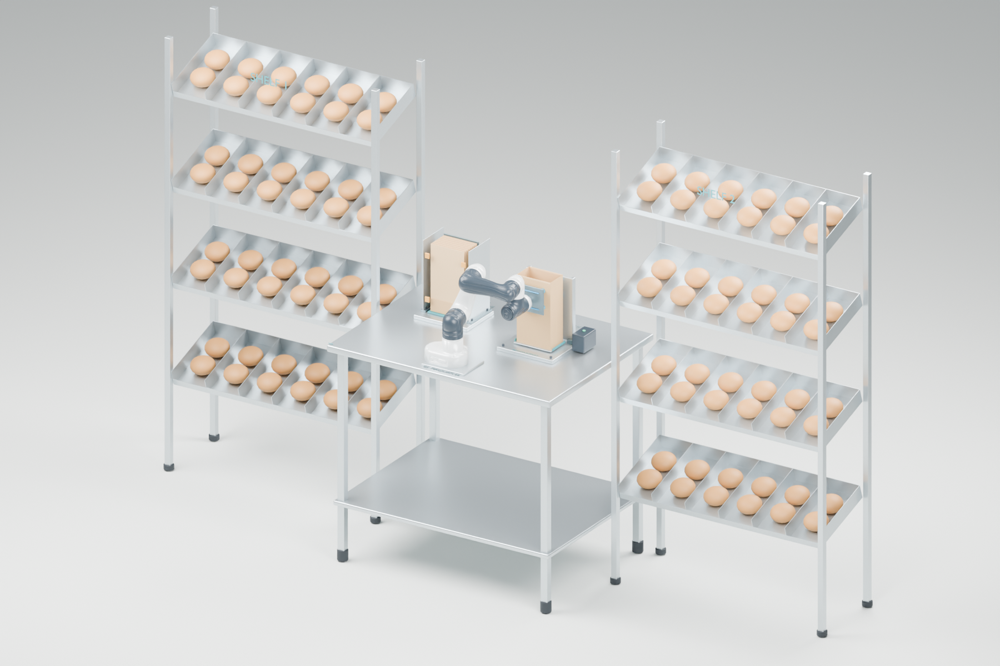

ME6 bag opening station
An upright magazine, one robot, and a fixed opposing vacuum plate.
Overhead animation
24-second illustrative sequence. It ends with the bag held open; filling and removal are separate operations.
The proposed arrangement
The robot grips one flat bag, withdraws from the magazine, and carries it upright to the centre fixture. The fixed cups grip the rear face; the robot retreats to open the mouth.
- The fixed plate and support tray remain at the loading station.
- The ME6 stays occupied while holding the bag open.
- The 100 cm counter length fits the previously measured 105 cm rack gap. Depth expansion should extend toward the robot work area, preserving the rear aisle.
Actual ME6 URDF geometry and joint limits are used. Joint positions are solved for the illustrated tool path. Paper folding, vacuum grip, double-bag separation, full collision clearance and loaded operation still require validation. Displayed stack thickness is provisional.
Editable parameters and rebuild
Change bag dimensions, counter size, station positions, cup spacing and timing in parameters.json. Regenerate the motion before rebuilding the model; unreachable poses stop the build.
& 'C:\Users\andyl\.cache\codex-runtimes\codex-primary-runtime\dependencies\python\python.exe' 'design/coffee_bar_3d/me6-bag-station/kinematics.py' & '.\.local\blender-runtime\blender-4.5.14-windows-x64\blender.exe' --background --python-exit-code 1 --python 'design/coffee_bar_3d/me6-bag-station/build.py'Motion calculation report
Between the two bun racks

The rear edges stay aligned. The proposed counter extends 40 cm farther into the robot work area than the previous 35 cm-deep counter. Adjacent robot parking and the complete loading path still need to be checked in the full café layout.
Blender model with racks